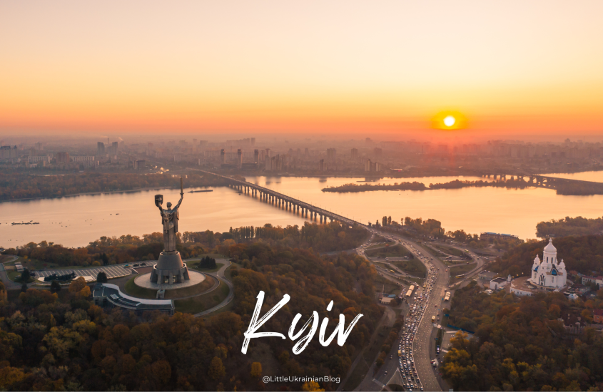

Kyiv
Kyiv, the capital and largest city of Ukraine, is known for its rich history, stunning architecture, and vibrant culture.
Kharkiv

Kharkiv, located in northeastern Ukraine, is renowned for its industrial significance and educational institutions.
Odesa

Odesa, a port city on the Black Sea, is famous for its beaches, 19th-century architecture, and bustling harbor.
Dnipro

Dnipro, situated along the Dnieper River, is a major industrial center known for its steel production and aerospace industry.
Lviv

Lviv, in western Ukraine, is celebrated for its well-preserved medieval architecture and vibrant cultural scene.
Population of Major Cities
City
Population
Kyiv
2,797,553
Kharkiv
1,433,886
Odesa
1,015,826
Dnipro
968,502
Lviv
717,273